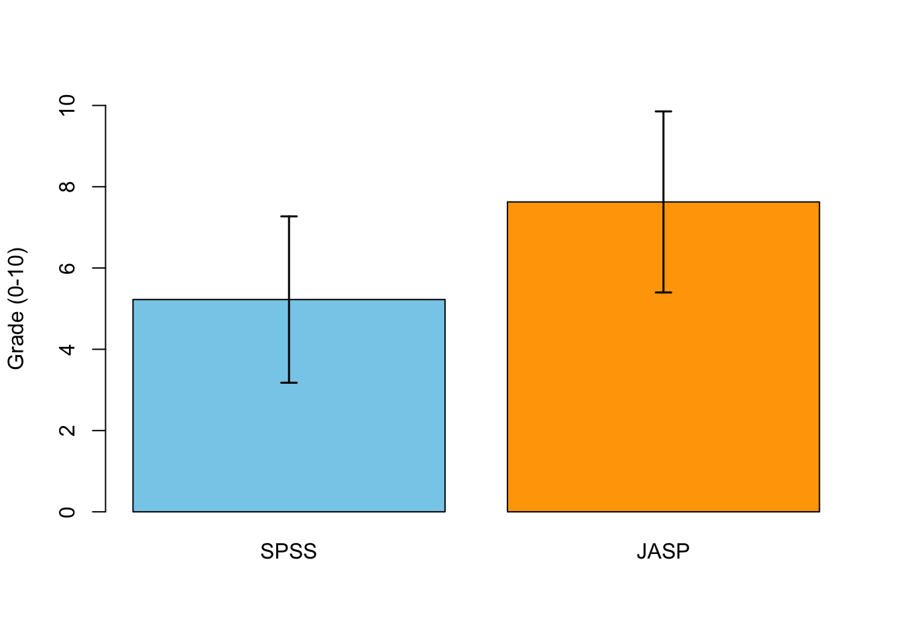

5. JASP: Visualization and Correlation
In this lecture we aim to:
- Introduce JASP
- Descriptive statistics
- Data visualizations
- Correlation
- How it works
- Controlling for a third variable
Reading: Chapters 4, 5, 7
JASP
Why JASP?
- User-friendly, intuitive interface
- Open-source (free)
- Reproducible analyses (easy to share)
- Better than IBM’s SPSS for transparency and workflow
- Integrates with R for advanced users

Getting Started with JASP
- Download from jasp-stats.org
- Open JASP, load your dataset (.jasp, .csv, .sav, etc.)
- Familiarize with the interface: Data view, Analysis panel, Output panel

Loading Data in JASP
- Click Open > select your file
- Data appears in spreadsheet view

Descriptive Statistics in JASP
- Go to Descriptives > select variables
- Options: mean, median, SD, min, max, quartiles
- Output updates instantly

Some special operations
- Filtering data
- Split variable in Descriptives
Getting help
- JASP Video Library
- The book

Visualization
Data visualization

Why Visualize Data?
- Quick overview of the data
- Spot patterns, outliers, or errors
- Invite the reader
Types of Data and Suitable Graphs
- Categorical data: Bar charts, pie charts
- Continuous data: Histograms, boxplots, raincloud plots
- Relationships: Scatterplots
Distribution plots in JASP
- Used for categorical variables
- Shows frequency or proportion
- Example: Number of students by major
How to in JASP:
1. Go to Descriptives > Descriptive Plots 2. Select your categorical variable 3. Choose “Bar Plot”
Histograms in JASP
- Used for continuous variables
- Shows distribution shape (normal, skewed, bimodal)
- Example: Distribution of exam scores
How to in JASP:
1. Go to Descriptives > Descriptive Plots 2. Select your continuous variable 3. Choose “Histogram”
Boxplots: Visualizing Spread and Outliers
- Shows median, quartiles, and outliers
- Useful for comparing groups
How to in JASP:
1. Go to Descriptives > Descriptive Plots 2. Select variable(s) 3. Choose “Boxplot”
Scatterplots: Relationships Between Variables
- Visualizes association between two continuous variables
- Example: Age vs. cognitive performance
How to in JASP:
1. Go to Descriptives > Descriptive Plots 2. Select two continuous variables 3. Choose “Scatterplot”
Best Practices in Data Visualization
- Use clear labels and titles
- Avoid unnecessary 3D effects
- Choose appropriate scales
- Check for misleading representations
Discussion:
What makes a graph misleading?
Critically Assess Graphs
- Are axes labelled (variable, units)?
- Are axes broken/equally spaced?
- Are error bars (e.g., confidence intervals) included where relevant?
Critically Assess Graphs
Scale Matters

Error Bars!

Correlation
Pearson Correlation

In statistics, the Pearson correlation coefficient, also referred to as the Pearson’s r, Pearson product-moment correlation coefficient (PPMCC) or bivariate correlation, is a measure of the linear correlation between two variables X and Y. It has a value between +1 and −1, where 1 is total positive linear correlation, 0 is no linear correlation, and −1 is total negative linear correlation. It is widely used in the sciences. It was developed by Karl Pearson from a related idea introduced by Francis Galton in the 1880s.
Source: Wikipedia
Pearson Correlation
\[r_{xy} = \frac{{COV}_{xy}}{S_xS_y}\] Where \(S\) is the standard deviation and \(COV\) is the covariance.
\[{COV}_{xy} = \frac{\sum_{i=1}^N (x_i - \bar{x})(y_i - \bar{y})}{N-1}\]
Plot correlation

Plot correlation

Plot correlation

\[(x_i - \bar{x})(y_i - \bar{y})\]
Load data
n <- 30
data <- read.csv("../../../datasets/Album Sales.csv")[, -4]
data <- data[1:n, ] # take the first 30 rows of the album sales data set from Field
DT::datatable(data, rownames = FALSE, options = list(searching = FALSE, scrollY = 415, paging = F, info = F))Variance
Standardize
\[z = \frac{x_i - \bar{x}}{{sd}_x}\]
z.sales <- (data$sales - mean(data$sales)) / sd(data$sales)
z.airplay <- (data$airplay - mean(data$airplay)) / sd(data$airplay)Standardize

Standardize
Covariance
\[{COV}_{xy} = \frac{\sum_{i=1}^N (x_i - \bar{x})(y_i - \bar{y})}{N-1}\]
mean.sales <- mean(sales, na.rm=TRUE)
mean.airplay <- mean(airplay, na.rm=TRUE)
delta.sales <- sales - mean.sales
delta.airplay <- airplay - mean.airplay
prod <- (sales - mean.sales) * (airplay - mean.airplay)
covariance <- sum(prod) / (N - 1)
covariance[1] 429.6552Covariance
Correlation
\[r_{xy} = \frac{{COV}_{xy}}{S_xS_y}\]
correlation <- covariance / ( sd(sales) * sd(airplay) ); correlation[1] 0.5838392correlation[1] 0.5838392Correlation
\[r_{xy} = \frac{{COV}_{xy}}{S_xS_y}\] \[{COV}_{xy} = \frac{\sum_{i=1}^N (x_i - \bar{x})(y_i - \bar{y})}{N-1}\]
cor( sales, airplay) # correlation[1] 0.5838392cor(z.sales, z.airplay) # correlation of z-scores[1] 0.5838392# covariance of z-scores
sum(z.sales * z.airplay ) / (N - 1)[1] 0.5838392Plot correlation
Significance of a correlation
\[t_r = \frac{r \sqrt{N-2}}{\sqrt{1 - r^2}} \\ {df} = N - 2\]
\[ \begin{aligned} H_0 &: t_r = 0 \\ H_A &: t_r \neq 0 \\ H_A &: t_r > 0 \\ H_A &: t_r < 0 \\ \end{aligned} \]
r to t
df <- N-2
t.r <- ( correlation*sqrt(df) ) / sqrt(1-correlation^2)
cbind(t.r, df) t.r df
[1,] 3.805276 28Visualize
Locate in t-distribution
Partial correlation
Venn diagram of Variance

Partial correlation
\[\LARGE{r_{xy \cdot z} = \frac{r_{xy} - r_{xz} r_{yz}}{\sqrt{(1 - r_{xz}^2)(1 - r_{yz}^2)}}}\]
adverts <- data$adverts
cor.sales.airplay <- cor(sales,airplay)
cor.sales.adverts <- cor(sales,adverts)
cor.airplay.adverts <- cor(airplay,adverts)
data.frame(cor.sales.airplay, cor.sales.adverts, cor.airplay.adverts) cor.sales.airplay cor.sales.adverts cor.airplay.adverts
1 0.5838392 0.4735266 0.0188131numerator <- cor.sales.airplay - (cor.sales.adverts * cor.airplay.adverts)
denominator <- sqrt( (1-cor.sales.adverts^2)*(1-cor.airplay.adverts^2) )
partial.correlation <- numerator / denominator
partial.correlation[1] 0.6528677Significance of partial correlation
Locate in t-distribution
df <- N - 3
t.pr <- ( partial.correlation*sqrt(df) ) / sqrt(1-partial.correlation^2)
t.pr[1] 4.478582p-value
Bored?
Exercise 7.1, Exercise 7.6, Exercise 7.7
- Note:
pets.jaspcan also be downloaded from the Data page
- Note:
End
Contact